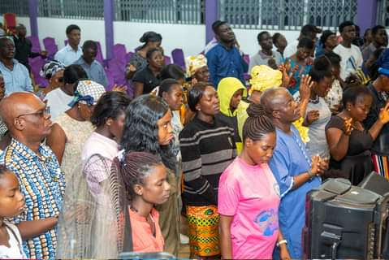

A place of refreshing changeOpen Door Baptist Church is a place of refreshing change — a place where sickness cannot thrive and where members are kept safe. This is Jesus Christ's Church, and every soul is welcome.
Founded on the unshakable Word of God, we are committed to worship, discipleship, and proclaiming the Gospel to the ends of the earth.
Everything we do flows from five commitments — how we reach toward God and one another.
Reaching up to God in wholehearted worship.
Reaching out to people with the love of Christ.
Reaching over to one another as a family.
Reaching in for the stars through discipleship.
Reaching down to people through humble service.
To be a place of refreshing change where members are transformed by Christ to lead change in their communities and spheres of influence.
To help members discover and experience God's transforming purpose for human life — and simply live it.
Whether you're exploring faith for the first time or looking for a church home, we'd love to welcome you this Sunday.